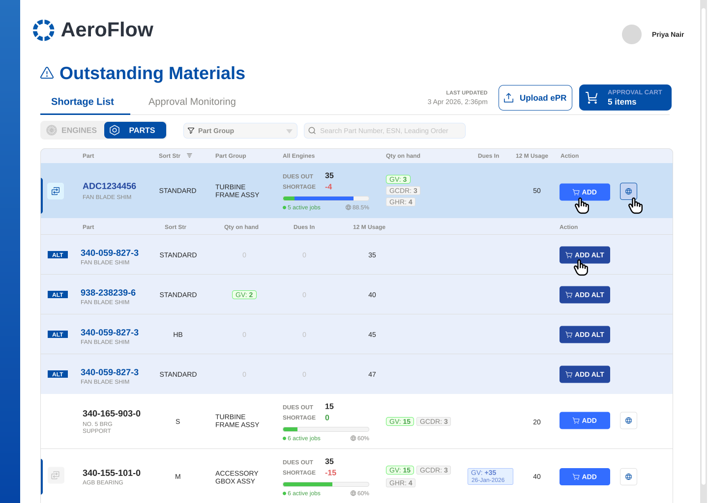
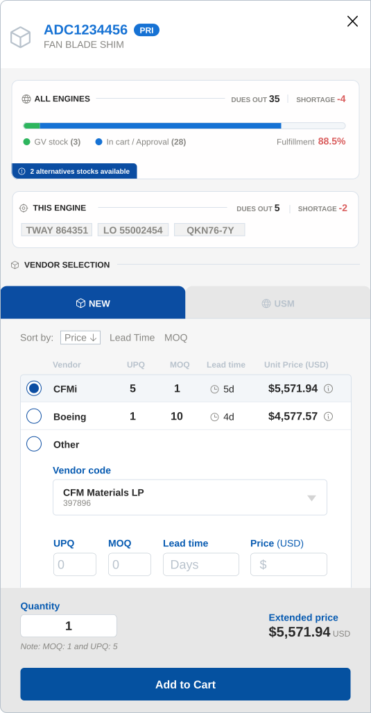
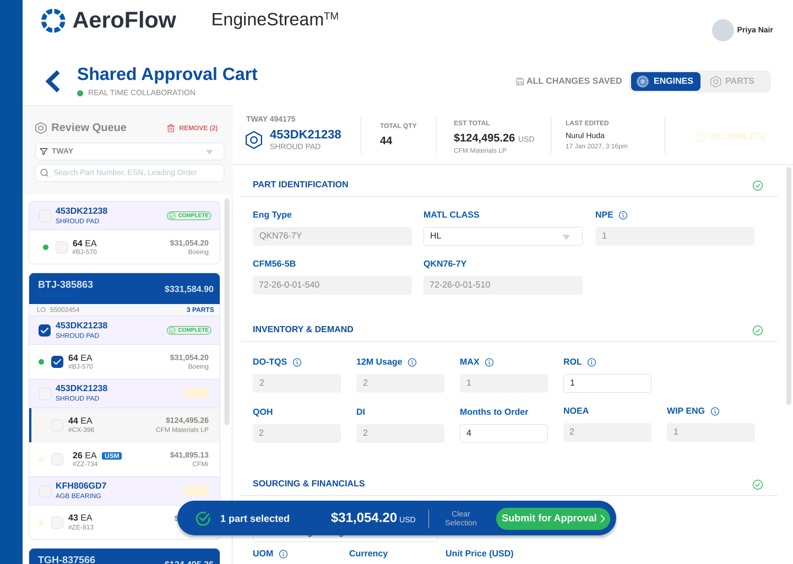

AEROSPACE · SUPPLY CHAIN · ENTERPRISE
Fixing Engine Shortage Requisitions
Confidentiality note: Company names, part numbers, and operational figures shown are anonymized or generalized per applicable NDAs. The workflow design and product thinking are unaltered and authentic.

1 2 3 4Marcus · Materials Planner
UX rationale — a slide-out drawer instead of a modal or a new page: a modal blocks the table behind it, a page reload loses your scroll position. The drawer lets planners adjust an order while the row they're working on stays visible.

1 2 3UX rationale — email threads meant no one had a single, current view of what was pending. A shared cart gives the manager full context on a part and lets them sign off in one tap: In Cart → Pending PPCS approval → PPCS Approved → ePR Approved.

1 2 3| Operational Area | Before | After |
|---|---|---|
| Stock Verification | Manual cross-checking across static spreadsheets | Real-time stock indicators (GV, GCDR, GHR) |
| Alternative Parts | Hard to find manually | Icon expands into nested rows for instant substitution |
| Approvals | Untracked email chains causing delays | Shared cart with live PPCS/ePR status |
| Fulfillment | One rigid spreadsheet view | Two modes: Engine ESN or Part Batching |